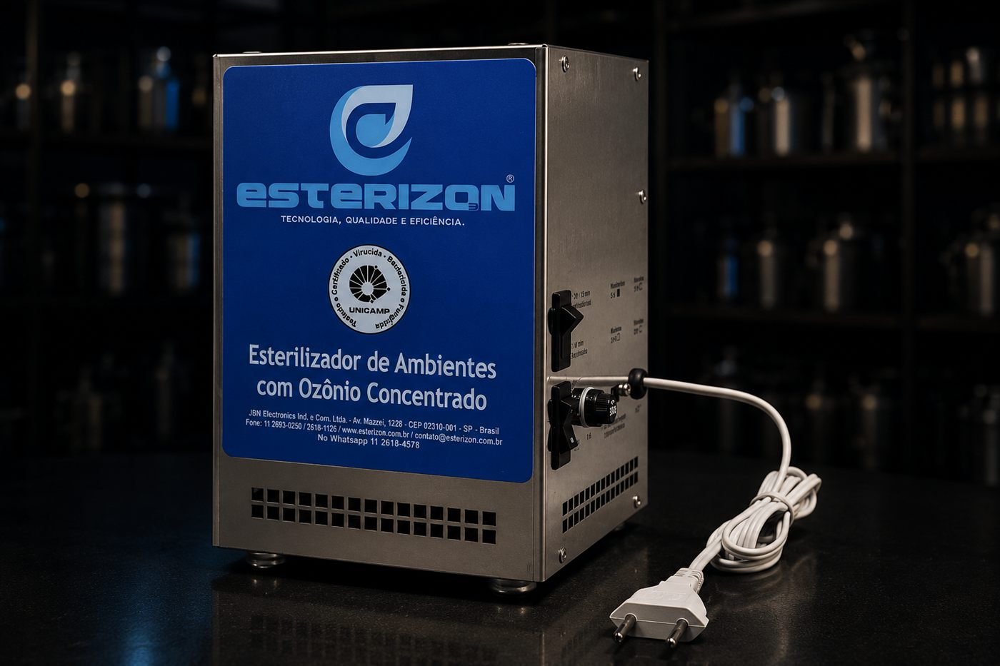

5G
5g O₃/h
Espaços menores — salas, consultórios, veículos.
Descontamina ambientes de 20 a 100 m² em 1 hora, com tecnologia de ozônio concentrado testada e certificada pela UNICAMP.

Modelos disponíveis
5g O₃/h
Espaços menores — salas, consultórios, veículos.
10g O₃/h
Espaços médios — lojas, clínicas, centros cirúrgicos veterinários.
20g O₃/h
Espaços grandes — hotéis, escolas, ambientes de 100 m².
Diferenciais
20–100 m²
Descontaminados em até 1 hora
99%
De infectividade viral comprovada contra vírus do grupo Coronavírus
UNICAMP
Certificação do Instituto de Biologia
Benefícios
Elimina bactérias, vírus e fungos do ar e das superfícies do ambiente.
Tecnologia pensada pra manter a eficiência do equipamento ao longo do tempo.
Ciclos de purificação mantêm o ambiente limpo continuamente.
Ambiente mais leve e agradável pra quem trabalha e circula nele.
Reduz a exposição a agentes que sobrecarregam o sistema imunológico.
Reduz acúmulo de poeira e partículas em suspensão no ar.
Como usar
Num ambiente fechado, sem presença de pessoas ou animais, ligue o equipamento e deixe agir pelo tempo equivalente ao modelo e à área do espaço.
Funciona em ciclos automáticos de 30 minutos, mantendo o ar puro continuamente mesmo com circulação de pessoas.
Especificações
Fala com a gente e a gente te ajuda a escolher o modelo certo pro seu negócio.
Solicitar orçamento